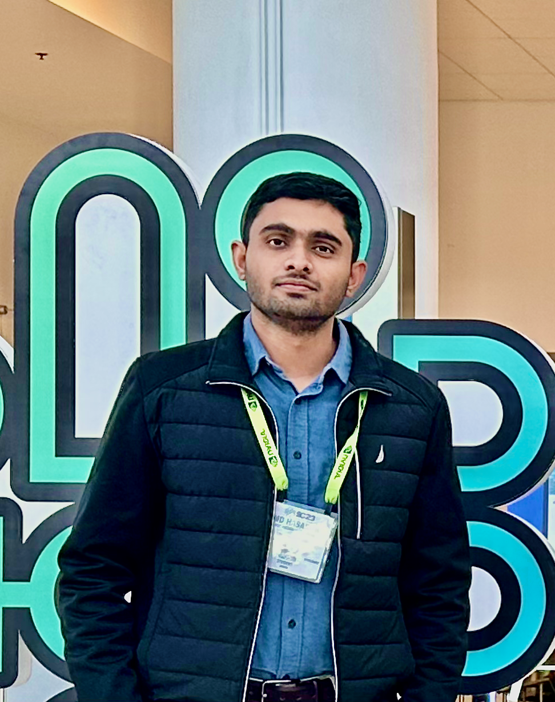
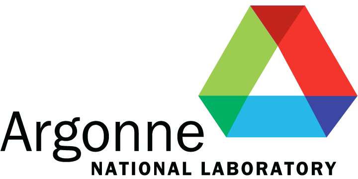

Md Hasanur Rahman
Computer Science, University of Iowa
|
 |
I am a second-year PhD student in the Computer Science at the University of Iowa. My PhD advisor is Dr. Guanpeng Li. I am currently collaborating with Argonne National Laboratory as a research intern, and my supervisor there is Dr. Sheng Di. Before starting my PhD, I worked at Samsung R&D Institute, Bangladesh for two years (2019-2021). As part of contribution to my team project, I helped develop/upgrade several key features and APIs of the iOS-based project. I completed my Undergrad (2015-2019) in Computer Science and Engineering at Bangladesh University of Engineering and Technology. My thesis supervisor was Dr. M. Kaykobad.
|
Research Interests
HPC Fault Tolerance
HPC Data Reduction
News (More)
11/2022: [Career] Attended SC’22 conference which is held in dallas.
11/2022: [Paper] My paper on lossy compression, FXRZ, is accepted at ICDE’23! It was done in collaboration with Argonee National Laboratory.
09/2022: [Career] Passed my PhD qualifying exam. One step closer!
09/2022: [Paper] One paper (me as second author) on fault tolerance is accepted in PRDC’22.
08/2022: [Paper] One workshop paper (me as second author) on fault tolerance is accepted in ISSRE-W’22.
10/2021: [Career] Presented my Peppa-X paper in SC’21 conference.
09/2021: [Career] Started collaborating with Argonne National Laboratory!
06/2021: [Paper] My paper on fault tolerance, Peppa-X, is accepted at SC’21! It was done in collaboration with Baidu Security.
Selected Publications (Full List)
[ICDE’23] A Feature-Driven Fixed-Ratio Lossy Compression Framework for Real-World Scientific Datasets
Md Hasanur Rahman, Sheng Di*, Kai Zhao, Robert Underwood, Guanpeng Li, and Franck Cappello[SC’21] PEPPA-X: finding program test inputs to bound silent data corruption vulnerability in HPC applications
Md Hasanur Rahman, Aabid Shamji, Shengjian Guo, and Guanpeng Li*
Received all three artifacts badges
